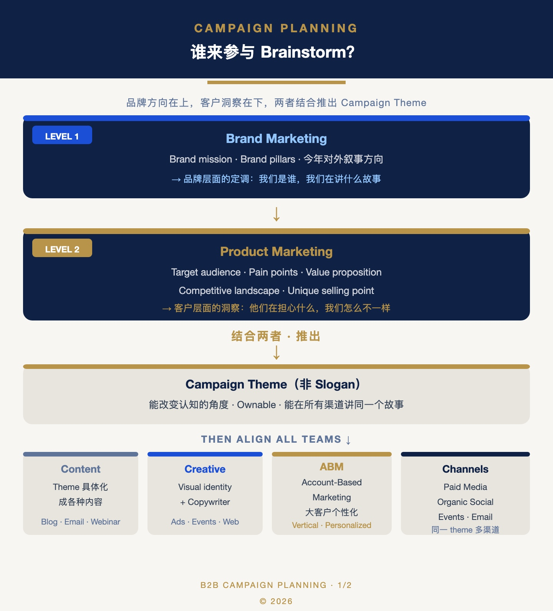
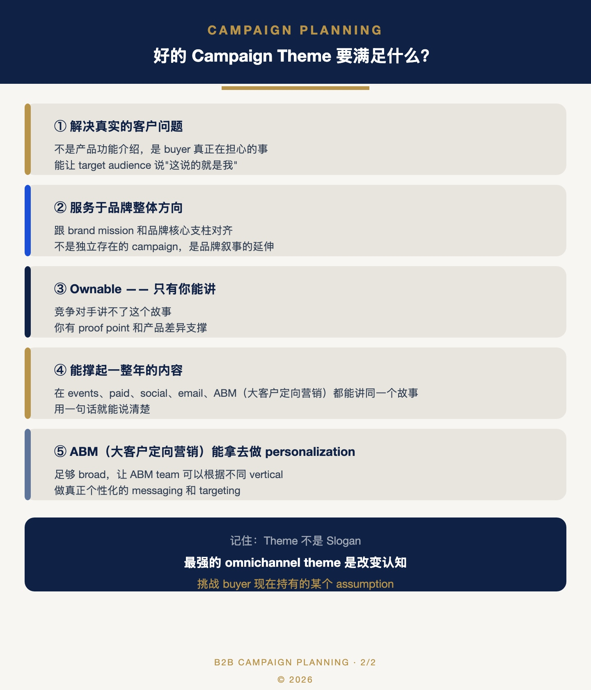

Every time I've seen a campaign fall flat, it's usually because the theme was decided too early — before the team had pulled together the right inputs. The brainstorm happened, a clever line got written, and everyone moved forward. But the foundation wasn't there.
The two inputs you need before anything else are product marketing and brand marketing. Product marketing gets you close to the customer — who you're actually targeting, what pain points they care about, where your product genuinely beats the competition, and what your unique selling point is. Brand marketing tells you the direction everything needs to ladder up to: the brand's mission, its pillars, what story the company is telling this year. Neither one is enough on its own. You need both before you can start thinking about a theme.

Brand Marketing sets the direction. Product Marketing brings the customer insight. The theme comes from where both meet.
Once you have those inputs, you can evaluate themes against a useful test: a good theme isn't a tagline. It's a point of view that challenges an assumption your buyers currently hold. If it doesn't shift how someone thinks about a problem, it won't hold up across channels. You also need it to be ownable — something you can say that your competitors genuinely can't, because your product and proof points back it up. And it has to work in paid media, organic social, email, and events without becoming a different campaign in each place.

A good campaign theme isn't a slogan — it challenges an assumption, travels across channels, and can't be copied.
Account-based marketing (ABM) teams are another group worth pulling in early. ABM runs personalized campaigns for high-value enterprise accounts, which means they need a theme that's broad enough to flex across different verticals and buying groups, but directionally clear enough to build from. If the theme is too narrow, they can't do their job. Getting their input early also means you're not retrofitting the theme for them after the fact.
The most valuable step, in my experience, is the actual joint brainstorm — getting product marketing, brand marketing, content, creative, copywriting, and ABM in the same room before anything is decided. Everyone brings their own input and theme direction. The discussion that follows tends to surface tensions you wouldn't have caught otherwise. And when everyone has shaped the theme from the start, the work that comes out of each team naturally pulls in the same direction.
Working on campaign strategy or thinking through your marketing career? Happy to talk it through.
Book a 1:1 →